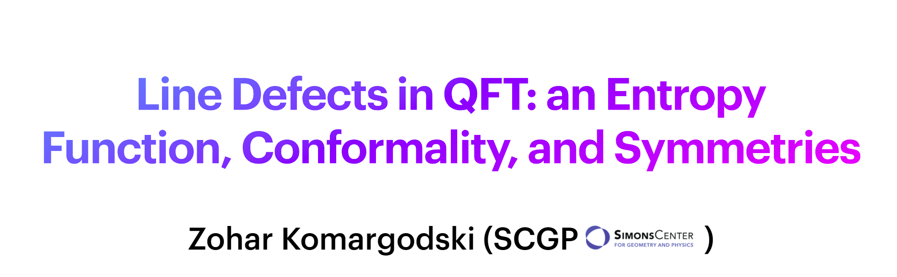
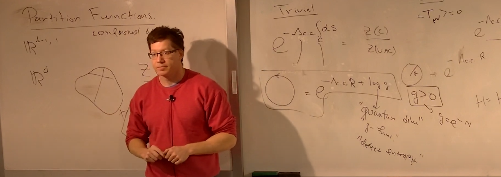

Lectures & Slides
Selected lecture materials with slides and recordings; useful for students and researchers interested in defects and advanced QFT topics.

Overview of recent developments and key results.

Selected lecture slides from Strings 2022.
